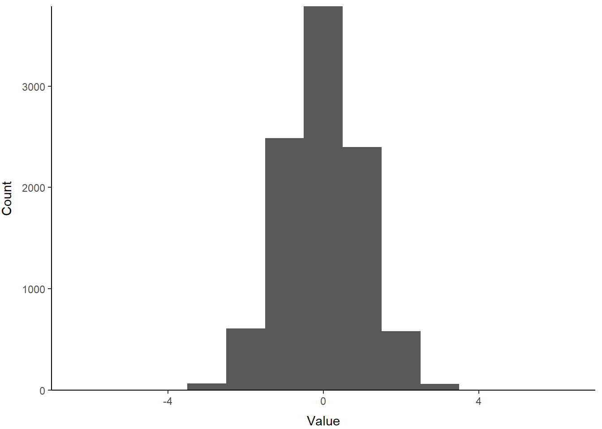
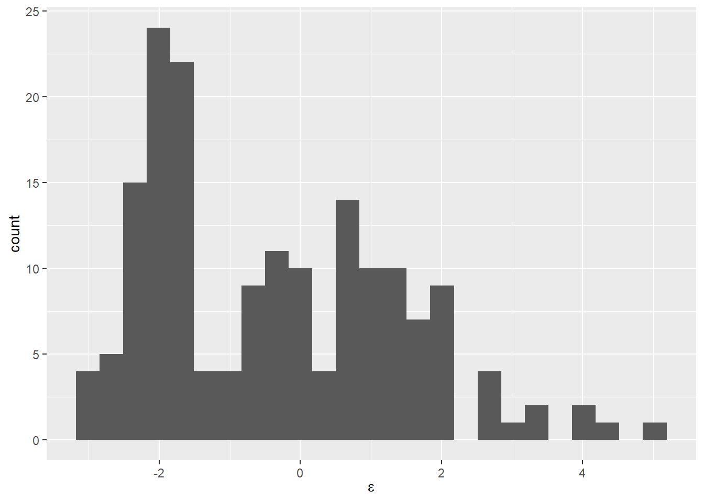
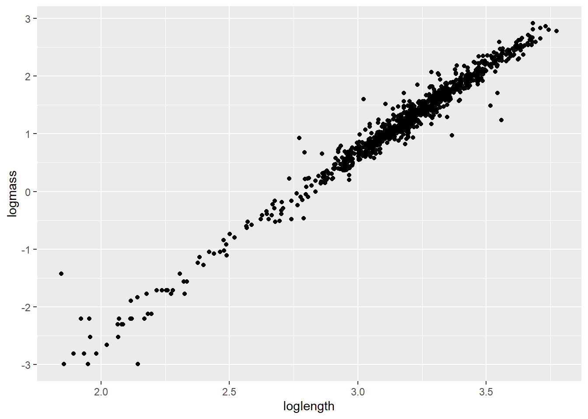
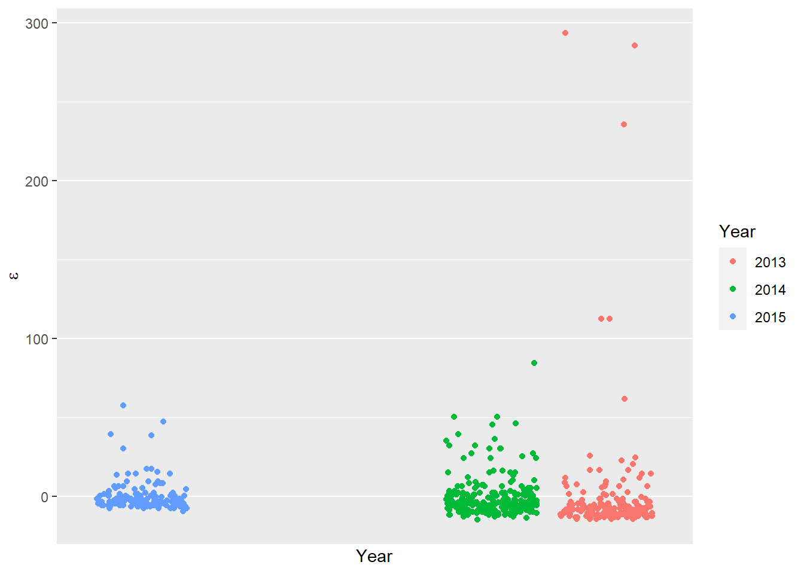
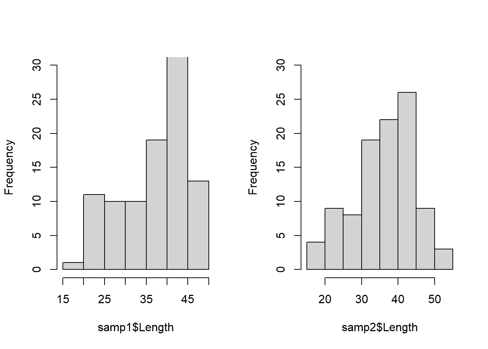

5.1 Probability distributions in R
R has a number of built-in distribution types, and there are random-number generators associated with most or all of these that will allow us to take random samples from a distribution (like picking numbers out of a hat!). This is useful for data simulation, but is also helpful for us to learn about probability distributions and how their parameters affect the shape, spread, scale, location, etc. of those distributions. We will briefly discuss concepts like skew because of how they can help us think about the assumptions that we are making (or breaking!) in the models that we use.
For this class, we will focus on one major family of distributions and then zero in on a few distributions within this family that you are guaranteed to encounter in analyses throughout your career.
5.1.1 Exponential family of distributions
Most or all of the distributions we will need for this class come from the exponential family of distributions.
The exponential family is very flexible. It includes most of the probability distributions with which you are familiar, and many more. Just ask this very reliable Wikipedia entry. Oh, let’s face it, you were going there anyway, I just cut out the Google step.
Take a look at the table at the bottom of this Wikipedia page just to get an idea of how many distributions are included within the exponential! Holy cow! We’re not going to look at all of these in this class- I just want you to be aware that this is a huge family of specific distributions.
Distributions that we’ll focus on this week:
- Continuous
Normal (Gaussian)
Lognormal
Beta
Uniform
- Discrete distributions
Bernouli
Binomial
Multinomial
Poisson
Negative binomial
5.1.2 Continuous probability distributions
The normal distribution
This is one distribution with which most of you have at least some nodding acquaintance.
The normal distribution is defined by two parameters:
The mean (\(\mu\))
The variance (\(\sigma^2\))
Let’s take a look at what the normal distribution looks like. We’ll start with the standard normal (or z) distribution. The standard normal is a normal distribution with a mean of zero and a variance of 1.
# Plot a density curve as for 10k
# samples from a normal distribution
# as a thick, black line
plot(density(
rnorm(n=1e4, mean=0, sd=1)),
main='', lwd=2, col='black',
xlab=expression(theta), ylim=c(0,1))
We can change the parameters of the standard normal to increase or decrease the degree of kurtosis or peakedness in our distribution. The blue line in the plot below shows a distribution with lower kurtosis than the z distribution (this one is called a t-distribution). The red line shows a distribution with greater kurtosis than the z distribution.
For line drawings like these, we can just add them to the existing plot to keep the same x and y scales and axes by using the lines function:
# Add thick, blue line to the
# plot for mu=0, sigma=2
lines(density(
rnorm(n=1e4, mean=0, sd=2)),
lwd=2, col = 'blue')
# Add thick, red line to the
# plot for mu=0, sigma=0.5
lines(density(
rnorm(n=1e4, mean=0, sd=.5)),
lwd=2, col = 'red') 
We can add a legend to clarify:
legend(x=1, # x-coordinate for legend
y=.9, # Y-coordinate for legend
legend=c('mu=0, sd=1', 'mu=0, sd=2', 'mu=0, sd=.5'), # Names
col=c('black', 'blue', 'red'), # Colors
lty=1, # Line type for legend symbols
lwd=2, # Line width for legend symbols
bg='n', # Legend fill: none
bty='n' # Box type for legend: none
) # Close call to legend
The lognormal distribution
The lognormal distribution is a probability distribution that assumes our random variable is normally distributed on the log scale. This assumption allows us to incorporate skew into the normal distribution and change the location and spread of the normal distribution by transforming the parameters (\(\mu\) and \(\sigma\)) onto the log scale. This is one of the more common data transformations that you will run into, e.g.: “We log-transformed the data to achieve normality…”
Let’s take a look at how changes to the mean change the location of this distribution:
# Plot the density fucntion for a lognormal
# distribution that has a mean of zero and
# a standard deviation of 1.
plot(density(
rlnorm(n=1e4, mean=0, sd=1)),
main='', lwd=2, col='black',
xlab=expression(theta), ylim=c(0,1))
# Now, we can change the parameters to change the location and spread
lines(density(
rlnorm(n=1e4, mean=1, sd=1)),
lwd=2, col = 'blue')
lines(density(
rlnorm(n=1e4, mean=2, sd=1)),
lwd=2, col = 'red')
# Add a legend to the plot
legend(x=20, y=.9,
legend=c('mu=0, sd=1', 'mu=1, sd=1', 'mu=2, sd=1'),
col=c('black', 'blue', 'red'),
lty=1, lwd=2, bg='n', bty='n')
The beta distribution
The beta distribution is a probability distribution that is constrained to the interval (0, 1). But, it is incredibly flexible in its parameterization, and as a result is very useful for stochastic simulation of variables on the probability scale, such as survival.
The parameters of the beta distribution are \(\alpha\) and \(\beta\), or commonly a and b or shape 1 and shape 2. Within this distribution, \(\alpha\) pushes the distribution to the right (toward 1), and \(\beta\) pushes the distribution to the left (toward 0). The relative magnitude of \(\alpha\) and \(\beta\) determine the location, shape, and spread of the probability distribution for our random variable. When \(\alpha\) and \(\beta\) are equal, and greater than 1, the beta distribution is a t-distribution within the interval (0, 1).
Let’s take a look:
# Within the rbeta function in R,
# 'a' is called 'shape1' and 'b'
# is called 'shape2'
plot(density(rbeta(n=1e4, shape1=50, shape2=50)),
main='', lwd=2, col='black',
xlab=expression(theta),
ylim=c(0,50), xlim=c(0,1))
# Now, we can change the parameters
# to change the location and spread
lines(density(rbeta(n=1e4, shape1=50, shape2=100)), lwd=2, col = 'blue')
lines(density(rbeta(n=1e4, shape1=500, shape2=250)), lwd=2, col = 'red')
# Add a legend to the plot
legend(x=.65, y=50,
legend=c('a=50, b=50', 'a=50, b=100', 'a=500, b=250'),
col=c('black', 'blue', 'red'),
lty=1, lwd=2, bg='n', bty='n') 
5.1.3 Discrete probability distributions
Discrete probability distributions are useful for situations in which our random variable of interest can only take specific values within the interval of interest. For example, this might include age, counts, pass/fail, or any number of conceivable categories. As a result, these require a slightly different treatment of probability as a discrete, rather than continuous phenomenon.
The Bernoulli distribution
The Bernoulli distribution is a special case of the binomial distribution with a single trial (see below for clarification). Bernoulli outcomes are those for which the random variable can take on one of two values: a one or a zero. This distribution is useful for visualizing processes such as coin flips, yes/no responses, live/dead endpoints, and a number of other very interesting phenomena. The Bernoulli distribution has a single parameter: the probability of success, but is also governed by sample size: n.
We can simulate data from a Bernoulli distribution in one of two ways in R
The “old-school” way of doing this was to draw from a binomial with a single trial. Here we randomly draw a single sample from a binomial with a single trial, and a probability of success of 50%. This can be likened to flipping a fair coin.
## [1] 1But now, there is a function in the Rlab package that simplifies this for the specific case of a Bernoulli.
# First, install the necessary package
# Uncomment to install
# install.packages('Rlab')
library(Rlab)## Rlab 2.15.1 attached.##
## Attaching package: 'Rlab'## The following objects are masked from 'package:stats':
##
## dexp, dgamma, dweibull, pexp, pgamma, pweibull, qexp, qgamma,
## qweibull, rexp, rgamma, rweibull## The following object is masked from 'package:datasets':
##
## precip## [1] 1## [1] 0 1 1 0 0 1 1 0 1 1The binomial distribution
The binomial distribution is pretty similar to the Bernoulli distribution except that it also includes a parameter called \(N\) (size in R) which corresponds to a number of trials. In most cases in biology, it will suffice to use the Bernoulli, but for modeling we will want to understand the binomial for things like random stratified designs and nested models that rely on the use of binomial distribution
To sample data from a binomial distribution, we can use rbinom. In this example we tell R that we want 10 samples (n) from a binomial distribution that has 10 trials (size) and a probability of success (prob) of 0.5. This is like having 10 people flip the coin 10 times instead of just one person flipping the coin 100 times.
# Take a random draw of 10 samples
# from a binomial distribution with 10 trials
# and probability of success equal to 0.50
rbinom(n=10, size=10, prob=0.5)## [1] 5 5 6 5 4 6 8 7 5 6The multinomial distribution
The multinomial distribution is a further generalization of the Binomial and Bernoulli distributions. Here, there are one or more possible categorical outcomes, and the probability of each one occuring is specified individually but all of them must sum to one. The categories are, in this case, assumed to be a mutually exclusive and exhaustive set of possible outcomes.
We can use the multinomial distribution to randomly sample from categories (imagine our response variable is a categorical variable, like the names of the students in this class). To do this:
# First, we make a vector of names:
name <- c('Alex', 'Eleanor', 'Kathleen', 'Madylin')
# Then, we assign a uniform probability of
# drawing any given name if they can all
# be drawn with equal frequency:
probs <- rep(x=1/length(name), times=length(name))
probs ## [1] 0.25 0.25 0.25 0.25Now, we can sample from a multinomial distribution using our objects. Here we are taking 5 samples from the distribution, each time we sample there is only one trial, and we are sampling the 4 probabilities above.
## [,1] [,2] [,3] [,4] [,5]
## [1,] 0 0 1 0 0
## [2,] 1 1 0 0 1
## [3,] 0 0 0 1 0
## [4,] 0 0 0 0 0WHOA a matrix??!!! HOLY CRAP, WHAT DOES IT ALL MEAN?
Take a step back, breathe, and think about this. The rows in this matrix are you and your classmates. If we took one random sample from the multinomial distribution, it would look like this:
## [,1]
## [1,] 0
## [2,] 1
## [3,] 0
## [4,] 0Here, we pulled a single sample from the distribution, and probability of sampling a given individual was 0.25 (1/4). If it makes it easier, we can put your names next to it:
## name
## [1,] "Alex" "0"
## [2,] "Eleanor" "1"
## [3,] "Kathleen" "0"
## [4,] "Madylin" "0"Now, if I was calling on you randomly in class, after 10 questions, the spread of people who have participated in class might look like this:
## name
## [1,] "Alex" "0" "0" "0" "0" "0" "0" "0" "1" "1" "0"
## [2,] "Eleanor" "1" "0" "0" "0" "0" "0" "0" "0" "0" "1"
## [3,] "Kathleen" "0" "0" "1" "1" "0" "0" "0" "0" "0" "0"
## [4,] "Madylin" "0" "1" "0" "0" "1" "1" "1" "0" "0" "0"Taking this one step further, we could just draw a name and stop looking at these ugly (no but really they are awesome!) matrices:
## [1] "Kathleen"And now we have a way to randomly select an individual based on a multinomial distribution!
The Poisson distribution
The Poisson distribution is used for counts or other integer data. This distribution is widely used (and just as widely misused!) for its ability to account for a large number of biological and ecological processes in the models that we will discuss this semester. The Poisson distribution has a single parameter, \(\lambda\), which is both the mean and the variance of the distribution. So, despite its utility, the distribution is relatively inflexible with respect to shape and spread. Fun fact: this distribution was originally worked out by a French mathematician to predict the number of soldiers who were accidentally killed from being kicked by horses.
Take a look at how the distribution changes when you change \(\lambda\), and you will get an idea of how this one works.

The negative binomial distribution
Okay, this one can be a little difficult to wrap your head around but it’s an important one for us to know about. So, we will spend a little extra time setting this one up to try and be clear. Often, folks start out thinking that they’re going to use a Poisson distribution and they end up collecting with data that do not conform to the relative inflexibility of that single-parameter distribution. For the purpose of this class, we are not going to dive into the mechanics of the negative binomial distribution, but we do need to know what it looks like and why we might need it.
One useful way to conceptualize the negative binomial is to ask “how long does it take for some event to occur?” For example, we might ask how long it takes a fish to start migrating, how long it takes a sea turtle to recover in a rehabilitation center, how long it will take for a terminal patient to expire, or how frequently we see the expression of a gene of interest. These kinds of questions are asked in aptly named “time-to-event” models that rely on the variance structure of the negative binomial. In the context of these kinds of questions, the negative binomial is a discrete probability distribution (and not a continuous distribution) because the “time” component of the distribution is actually a series of independent Bernoulli trials (holy crap, I know!). For example: if we want to know how many days it will take for a turtle to recover, what we are really doing is asking on each day until recovery, “Is today the day?”. Then, we flip a coin and find out. So, each day in this example is a Bernoulli trial. Another way to think about this is the number of failures occurring in a sequence before a target number of sucesses is achieved.
For the classical parameterization:
We will start with looking at how many failures are observed before one success in a sequence of Bernoulli trials.
With probability of succes equal to 0.95, it doesn’t take long and most of the probability mass is on zero, with a couple of stragglers further out.

If we decrease probability of success in each trial to 0.25, we see more failures on average before we reach success. Most of the time, it still takes less than 5 trials to reach a success, but some times it takes much longer.

And, if we increase the number of successes that we use for our criterion, or target, then it spreads the distribution out even further.
Now, because of it’s properties, the negative binomial is also useful for number of other applications. Specifically, it has been widely used to represent Poisson-like processes in which the mean and variance are not equal (e.g., overdispersion). This has seen a lot of application in the field of ecology, especially for overdispersed count data.
Here, we draw 10,000 random samples from a distribution with a mean of 10 and an overdispersion parameter of 1. The overdispersion parameter is called ‘size’ because this is an alternative parameterization that is just making use of the relationships between existing parameters of the negative binomial. It’s easy to grasp how the mean changes the location of the distribution.

But, note how the overdispersion parameter changes things if you run the following code:



A more intuitive way to work with the negative binomial in R is by using
the MASS package. In this parameterization, we use the mean and the
dispersion parameter explicitly so it makes more sense:
# MASS comes pre-installed as part of base software
library(MASS)
hist(rnegbin(1e4, mu=10, theta = .1))
hist(rnegbin(1e4, mu=10, theta = 10))
hist(rnegbin(1e4, mu=10, theta = 100))
hist(rnegbin(1e4, mu=10, theta = 1000)) NOTE that the results are pretty much identical.